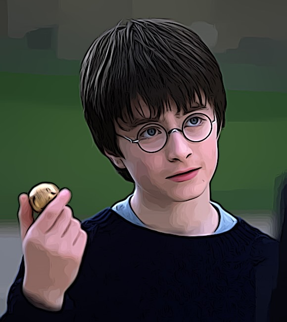

Steckbrief
Name: Harry James Potter
Geburtsdatum: 31. Juli 1980
Eltern: James und Lily Potter
Herkunft: Godric's Hollow, England
Zauberstab: Stechpalmen-Holz mit einem Kern aus einer Phönixfeder
Zugehörigkeit: Gryffindor
Informationen zum Charakter
Harry Potter ist der Protagonist der Filmreihe "Harry Potter".
Als Waisenjunge erfährt er an seinem elften Geburtstag, dass er ein Zauberer ist und besucht ab diesem Zeitpunkt die Hogwarts-Schule für Hexerei und Zauberei.
Zusammen mit seinen Freunden Ron Weasley und Hermine Granger erlebt er zahlreiche Abenteuer, kämpft gegen die dunklen Kräfte und stellt sich Lord Voldemort.
Harry zeichnet sich durch Tapferkeit, Entschlossenheit und Loyalität aus und wird noch berühmter.
Informationen zum Schauspieler
Harry Potter wird im Film von Daniel Radcliffe verkörpert.
Daniel Radcliffe (geboren am 23. Juli 1989) wurde bereits im Alter von elf Jahren für die Rolle ausgewählt.
Durch diese Rolle wurde er weltweit bekannt und berühmt.
Nach diesem Film setzte er seine Schauspielkarriere fort und spielte in vielen anderen Filmen mit.